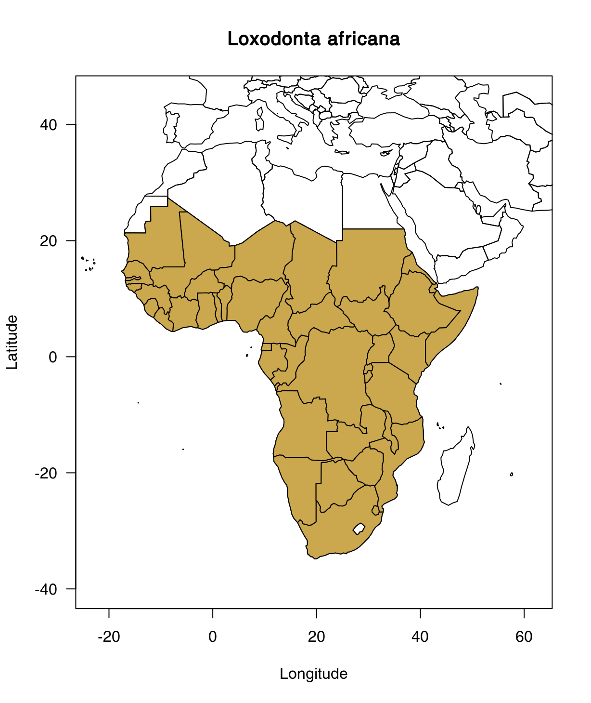

Study case: the African bush elephant (Loxodonta africana)
rcites team
10-08-2018
Source:vignettes/elephant.Rmd
elephant.RmdIntroduction and setup
In Get started with rcites, we explained how to get a token and set it up for general access to the CITES Species+ database. Also, we very briefly introduced to how to code the key features of rcites. With this article, we aim to further introduce to the functionality and workflows of rcites. For this, we use the African bush elephant (Loxodonta africana, hereafter “elephant”) as a case study. The elephant not only is a highly endangered species that is illegally traded globally but also a flagship species of nature conservation and the logo species of CITES.
We start with a basic set up: we load the package and set the token:
Retrieve the taxon id
In order to access information about the elephant, we first need to retrieve its Species+ taxon identifier. For this, we use the spp_taxonconcept() function and the elephant’s scientific name, Loxodonta africana, as query_taxon argument.
#> → Retrieving info from page 1 ........................✔#>
#> ── General info - CITES ($general): ───────────────────────────────────────
#> id full_name author_year rank name_status
#> 1 4521 Loxodonta africana (Blumenbach, 1797) SPECIES A
#> updated_at active cites_listing
#> 1 2019-05-09 11:12:49 TRUE I/II
#>
#> ── Classification ($higher_taxa): ─────────────────────────────────────────
#> id kingdom phylum class order family
#> 1 4521 Animalia Chordata Mammalia Proboscidea Elephantidae
#>
#> ── Synonyms ($synonyms): ──────────────────────────────────────────────────
#> id apply.do.call.rbind..tmp.wch....2..unlist.
#> 1 4521 37069
#> 2 4521 Loxodonta cyclotis
#> 3 4521 (Matschie, 1900)
#> 4 4521 SPECIES
#>
#> ── Common names ($common_names): ──────────────────────────────────────────
#> id name language
#> 1 4521 Haathi UR
#> 2 4521 Elefante PT
#> 3 4521 Ndovo SW
#> 4 4521 Norsu FI
#> 5 4521 afrikansk elefant DA
#> 6 4521 Elefant NO
#> 7 4521 Afrikanischer Elefant DE
#> 8 4521 Elefante EU
#> 9 4521 Slon BG
#> 10 4521 Elefante africano IT
#> -------truncated-------
#>
#> Information available: $all_id, $general, $higher_taxa, $accepted_names, $common_names, $synonyms, $cites_listingsAs the first column of the output shows, the taxon identifier of the elephant is 4521. This taxon_id will be used for all next function coding.
Beyond the taxon identifier, the output also provides information about the taxon classification and other names, both synonyms and common names if any, in different languages.
Map the elephant’s distribution
Before giving more insights into the legislation status of the elephant, we have a look at where the elephant actually occurs naturally. For this, we can access the elephant’s distribution information with the spp_distributions() function. Thereafter, we can map the distribution with the help of the rworldmap package.
library(rworldmap)
par(las = 1)
elephant_distr <- spp_distributions(taxon_id = "4521",
verbose = FALSE)$distributions
map2 <- joinCountryData2Map(elephant_distr,
joinCode="ISO2",
nameJoinColumn = "iso_code2",
nameCountryColumn = "name")#> 42 codes from your data successfully matched countries in the map
#> 0 codes from your data failed to match with a country code in the map
#> 201 codes from the map weren't represented in your dataplot(c(-23, 62), c(45, -40),
type = "n",
main = "Loxodonta africana",
xlab = "Longitude",
ylab = "Latitude")
plot(map2, add = TRUE)
plot(map2[!is.na(map2$iso_code2),], col = "#cba74d", add = TRUE)
Access the legislation status
The functions spp_cites_legislation() and spp_eu_legislation() provide access to the legislation status information of the elephant.
First, we have a look at the CITES legislation status:
#> → Now processing taxon_id '4521'......................✔#>
#> ── Cites listings ($cites_listings): ──────────────────────────────────────
#> id taxon_concept_id is_current appendix change_type effective_at
#> 1 3666 4521 TRUE II + 2007-09-13
#> 2 3665 4521 TRUE I + 2007-09-13
#> 3 3645 4521 TRUE I R+ 1990-01-18
#>
#> ── Cites quotas ($cites_quotas): ──────────────────────────────────────────
#> id taxon_concept_id quota publication_date public_display is_current
#> 1 20604 4521 0 2017-03-06 TRUE TRUE
#> 2 20586 4521 0 2017-03-06 TRUE TRUE
#> 3 20695 4521 0 2017-03-06 TRUE TRUE
#> 4 20696 4521 0 2017-03-06 TRUE TRUE
#> 5 20697 4521 0 2017-03-06 TRUE TRUE
#> 6 20698 4521 0 2017-03-06 TRUE TRUE
#> 7 20699 4521 0 2017-03-06 TRUE TRUE
#> 8 20700 4521 0 2017-03-06 TRUE TRUE
#> 9 20701 4521 0 2017-03-06 TRUE TRUE
#> 10 20703 4521 0 2017-03-06 TRUE TRUE
#> unit geo_entity.iso_code2 geo_entity.name geo_entity.type
#> 1 <NA> CG Congo COUNTRY
#> 2 <NA> AO Angola COUNTRY
#> 3 <NA> BW Botswana COUNTRY
#> 4 <NA> BF Burkina Faso COUNTRY
#> 5 <NA> CF Central African Republic COUNTRY
#> 6 <NA> CI Côte d'Ivoire COUNTRY
#> 7 <NA> GW Guinea Bissau COUNTRY
#> 8 <NA> LR Liberia COUNTRY
#> 9 <NA> SL Sierra Leone COUNTRY
#> 10 <NA> GA Gabon COUNTRY
#> -------truncated-------
#> Field(s) not printed: notes, url
#>
#> ── Cites suspensions ($cites_suspensions): ────────────────────────────────
#> id taxon_concept_id start_date is_current applies_to_import
#> 1 15986 <NA> 2013-05-16 TRUE FALSE
#> 2 17621 4521 2014-08-11 TRUE TRUE
#> 3 17620 4521 2014-08-11 TRUE TRUE
#> 4 17686 4521 2014-10-10 TRUE TRUE
#> 5 18709 4521 2010-08-16 TRUE TRUE
#> 6 15983 <NA> 2011-01-19 TRUE FALSE
#> 7 15971 <NA> 2004-07-30 TRUE FALSE
#> 8 18955 4521 2016-04-01 TRUE TRUE
#> 9 22079 <NA> 2018-01-30 TRUE FALSE
#> 10 22076 <NA> 2018-01-22 TRUE FALSE
#> geo_entity.iso_code2 geo_entity.name geo_entity.type
#> 1 GN Guinea COUNTRY
#> 2 ZW Zimbabwe COUNTRY
#> 3 TZ United Republic of Tanzania COUNTRY
#> 4 US United States of America COUNTRY
#> 5 ZW Zimbabwe COUNTRY
#> 6 DJ Djibouti COUNTRY
#> 7 SO Somalia COUNTRY
#> 8 CN China COUNTRY
#> 9 DJ Djibouti COUNTRY
#> 10 LR Liberia COUNTRY
#> -------truncated-------
#> Field(s) not printed: notes, start_notification.name, start_notification.date, start_notification.urlWe can do the same for the elephant’s legislation status in the European Union:
#> → Now processing taxon_id '4521'......................✔#>
#> ── EU listings ($eu_listings): ────────────────────────────────────────────
#> id taxon_concept_id is_current annex change_type effective_at
#> 1 27868 4521 TRUE B + 2017-02-04
#> 2 27801 4521 TRUE A + 2017-02-04
#>
#> ── EU decisions ($eu_decisions): ──────────────────────────────────────────
#> id taxon_concept_id start_date is_current eu_decision_type.name
#> 1 26285 4521 2015-04-09 TRUE Positive
#> 2 25508 4521 2014-09-03 TRUE Positive
#> 3 2765 4521 2011-12-02 TRUE i)
#> 4 11682 4521 2012-02-23 TRUE Positive
#> 5 24825 4521 2014-05-28 TRUE Positive
#> 6 27017 4521 2015-09-15 TRUE Positive
#> 7 27360 4521 2016-06-27 TRUE Negative
#> 8 30377 4521 2017-06-21 TRUE Negative
#> 9 30553 4521 2017-06-21 TRUE Positive
#> 10 30664 4521 2017-11-09 TRUE Suspension (a)
#> eu_decision_type.type geo_entity.iso_code2 geo_entity.name
#> 1 POSITIVE_OPINION ZW Zimbabwe
#> 2 POSITIVE_OPINION BW Botswana
#> 3 NO_OPINION ET Ethiopia
#> 4 POSITIVE_OPINION NA Namibia
#> 5 POSITIVE_OPINION ZA South Africa
#> 6 POSITIVE_OPINION ZM Zambia
#> 7 NEGATIVE_OPINION MZ Mozambique
#> 8 NEGATIVE_OPINION TZ United Republic of Tanzania
#> 9 POSITIVE_OPINION TZ United Republic of Tanzania
#> 10 SUSPENSION CM Cameroon
#> geo_entity.type start_event.name start_event.date source.code
#> 1 COUNTRY SRG 71 Soc 2015-04-09 W
#> 2 COUNTRY SRG 69 Soc 2014-09-03 W
#> 3 COUNTRY SRG 58 Soc 2011-12-02 W
#> 4 COUNTRY SRG 59 Soc 2012-02-23 W
#> 5 COUNTRY SRG 68 Soc 2014-05-28 W
#> 6 COUNTRY SRG 73 Soc 2015-09-15 W
#> 7 COUNTRY SRG 76 Soc 2016-06-27 W
#> 8 COUNTRY SRG 79 Soc 2017-06-21 W
#> 9 COUNTRY SRG 79 Soc 2017-06-21 W
#> 10 COUNTRY No 2017/1915 2017-11-09 W
#> source.name term.code term.name
#> 1 Wild TRO trophies
#> 2 Wild <NA> <NA>
#> 3 Wild <NA> <NA>
#> 4 Wild <NA> <NA>
#> 5 Wild <NA> <NA>
#> 6 Wild TRO trophies
#> 7 Wild TRO trophies
#> 8 Wild <NA> <NA>
#> 9 Wild TRO trophies
#> 10 Wild TRO trophies
#> Field(s) not printed: notes, eu_decision_type.description, start_event.urlWith the combination of map2 and the legislation data, one might be able to illustrate the elephant’s trade directions. This and other use examples of the rcites data output will be added bit by bit.
Access the elephant’s Species+ reference data
Last but not least, it is important to identify which references the Species+ information about the elephant is based on. For this, we can access the Species+ reference data with the spp_references() function.
#>
#> ── References ($references): ──────────────────────────────────────────────
#> id citation is_standard
#> 1 10265 Anon. 1978. Red data book: Mammalia. IUC [truncated] FALSE
#> 2 6344 Barnes, R. F., Agnagna, M., Alers, M. P. [truncated] FALSE
#> 3 17013 Blanc, J.J., Thouless, C.R., Hart, J.A., [truncated] FALSE
#> 4 6371 Burton, M. P. 1994. Alternative projecti [truncated] FALSE
#> 5 6532 Douglas-Hamilton, I. 1987. African Eleph [truncated] FALSE
#> 6 6534 Douglas-Hamilton, I. 1987. African Eleph [truncated] FALSE
#> 7 6825 Jackson, P. 1982. Elephants and rhinos i [truncated] FALSE
#> 8 7224 Meester, J. and Setzer, H. W (eds.) 1974 [truncated] FALSE
#> 9 7609 Parker, I. and Amin, M. 1983. Ivory cris [truncated] FALSE
#> 10 19397 Parker, I.S.C. and Martin, E.B. 1982. Ho [truncated] FALSE
#> -------truncated-------#> [1] 15 3